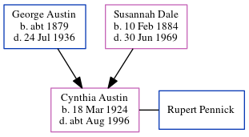

Cynthia Roberta Pennick (née Austin) 1924 - c1996
[ Home ] | [ Calendar ] | [ Surnames Index ] | [ Census Index ] | [ Family History ]The youngest of 5 children of George Austin (a baker's assistant) and Susannah Dale, Cynthia Austin, the third cousin once-removed on the father's side of Nigel Horne, was born in Hambledon, Surrey, England on Mar 18, 19241,2. She married Rupert Pennick in Surrey, England around Nov 19443. In 1945, she was living at 97 Walnut Tree Close, Guildford, Surrey4 (the same place as her mother had been living on Sep 29, 1939).
She died c. Aug 1996 in Cambridge, Cambridgeshire, England2.
Parents
- George Frederick was born c. 1879
- Susannah Elizabeth was born on Feb 10, 1884
Citations
- England & Wales births 1837-2006 - Findmypast
- England & Wales deaths 1837-2007 - Findmypast
- England & Wales Marriages 1837-2005 - Findmypast
- Surrey, England, Electoral Registers
Media
England & Wales births 1837-2006 - BMD/B/1924/2/AZ/000037/137
England & Wales marriages 1837-2005 - BMD/M/1944/4/AZ/000032/068
England & Wales deaths 1837-2007 - BMD/D/1996/7/81552250
Family Tree
Generated by ged2site. Last updated on Jun 11, 2024